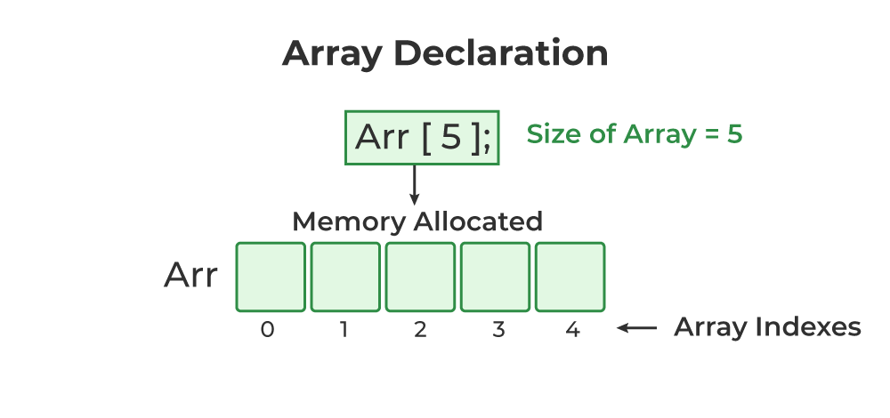

In C++, an array is a data structure that is used to store multiple values of similar data types in a contiguous memory location.
For example, if we have to store the marks of 4 or 5 students then we can easily store them by creating 5 different variables but what if we want to store marks of 100 students or say 500 students then it becomes very challenging to create that numbers of variable and manage them. Now, arrays come into the picture that can do it easily by just creating an array of the required size.
Properties of Arrays in C++
An Array is a collection of data of the same data type, stored at a contiguous memory location.
Indexing of an array starts from 0. It means the first element is stored at the 0th index, the second at 1st, and so on.
Elements of an array can be accessed using their indices.
Once an array is declared its size remains constant throughout the program.
An array can have multiple dimensions.
The number of elements in an array can be determined using the sizeof operator.
We can find the size of the type of elements stored in an array by subtracting adjacent addresses.
Array Declaration in C++
In C++, we can declare an array by simply specifying the data type first and then the name of an array with its size.
Syntax : data_type array_name[Size_of_array];
Example : int arr[5];
Here
int: It is the type of data to be stored in the array. We can also use other data types such as char, float, and double.
arr: It is the name of the array.
5: It is the size of the array which means only 5 elements can be stored in the array.

Initialization of Array in C++
In C++, we can initialize an array in many ways but we will discuss some most common ways to initialize an array. We can initialize an array at the time of declaration or after declaration.
Initialize Array with Values in C++ We have initialized the array with values. The values enclosed in curly braces ‘{}’ are assigned to the array. Here, 1 is stored in arr[0], 2 in arr[1], and so on. Here the size of the array is 5. int arr[5] = {1, 2, 3, 4, 5};
Initialize Array with Values and without Size in C++ We have initialized the array with values but we have not declared the length of the array, therefore, the length of an array is equal to the number of elements inside curly braces. int arr[] = {1, 2, 3, 4, 5};
Initialize Array after Declaration (Using Loops) We have initialized the array using a loop after declaring the array. This method is generally used when we want to take input from the user or we cant to assign elements one by one to each index of the array. We can modify the loop conditions or change the initialization values according to requirements. for (int i = 0; i < N; i++) { arr[i] = value;}